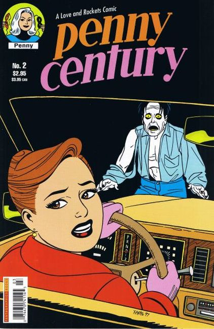
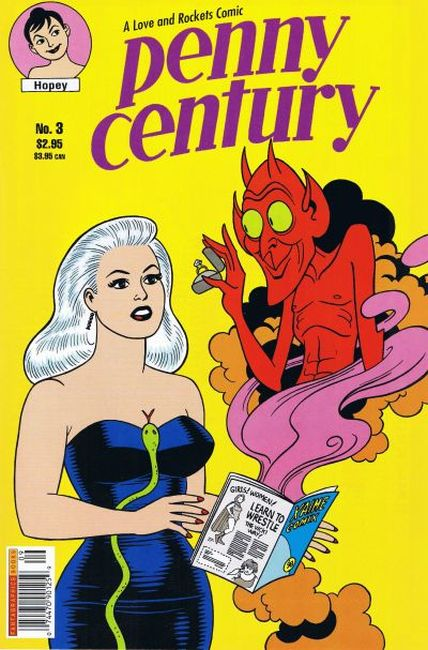
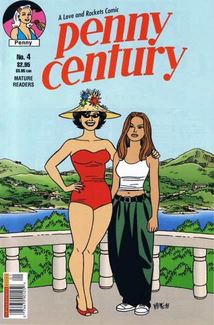
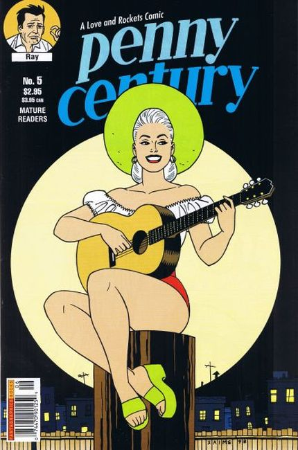
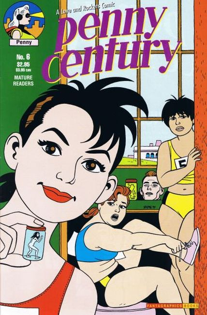
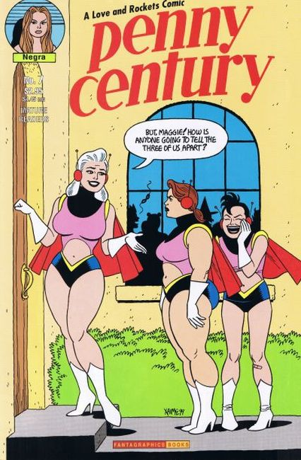

×






❮
❯
7 issues in 1997 published by Fantagraphics, created by Jaime Hernandez. Penny Century is a Love And Rockets comic.
Issue #1 Stories:
Ray has moved to a new town where he doesn't know anyone and doesn't fit in. He soliloquizes about the past, his sporadic sexual encounters with Penny Century and how he had fallen for her, plus his failed relationships with Danita Lincoln and Margarita Chascarrillo.
"Fire Water" Two cowboys get drunk, stagger home through the desert, and encounter a devil.
Locas story: Maggie is working for Negra's mom, doing paperwork, and chauffering Negra.
"La Pantera Negra" Norma (Negra's mom) catches Negra roaming the streets with her girlfriends, and takes her back home in a temper.
"Hopey Hop Sacks" Hopey, in the bath, tells Maggie over the phone about Guy Goforth asking her out.